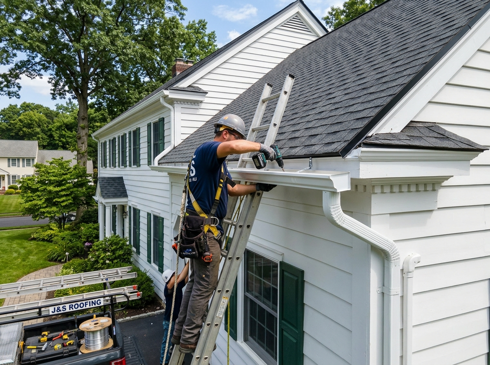
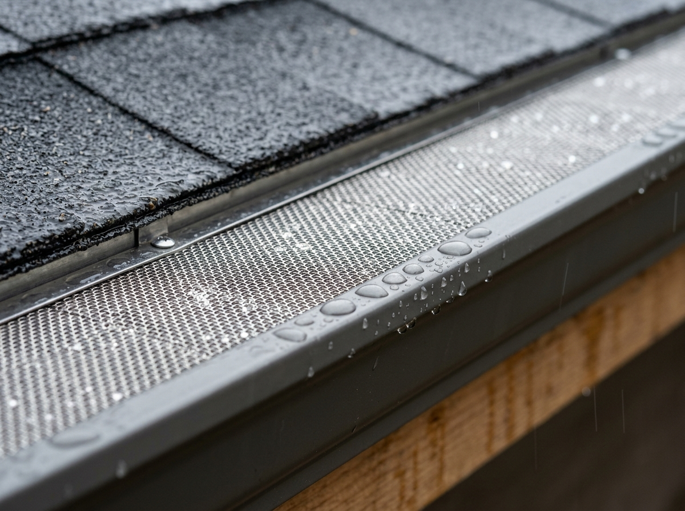
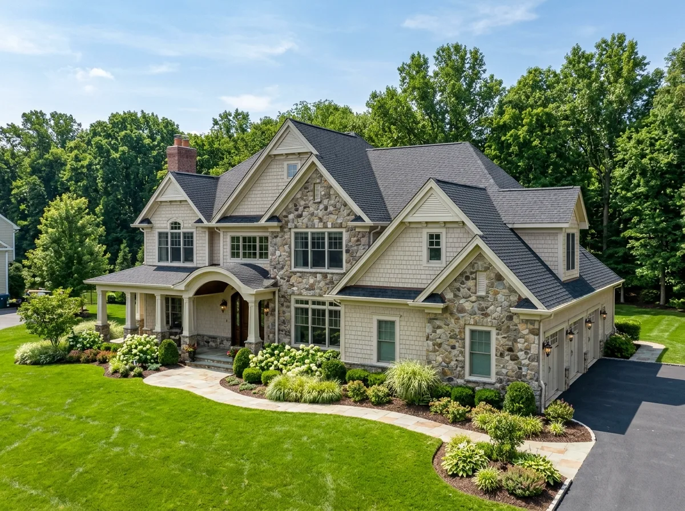

Seamless Gutter Installation in Bridgewater, NJ
Protect your roofline, fascia boards, and home foundation with custom-extruded seamless aluminum gutters and micro-mesh leaf protection. Fabricated on-site to the exact dimensions of your Somerset County home for zero leak joints, high-volume stormwater defense, and zero clogging.

Gutters overflowing, leaking at seams, or pulling away?
Rainwater spilling over gutters saturates home foundation footings, erodes landscaping beds, and causes expensive wood rot behind fascia boards.
Professional Seamless Gutter Installation for Bridgewater Properties
Your roof is only as protective as the drainage network that manages its runoff. In Bridgewater, where mature oak and pine tree canopies drop heavy organic debris and severe nor'easters dump inches of rain in hours, undersized or leaky sectional gutters fail rapidly.
Bridgewater Roofer fabricates continuous 5-inch and 6-inch seamless aluminum gutters right from our mobile roll-forming extrusion trucks parked in your driveway (explore our technical guide comparing 5-inch vs. 6-inch gutters for New Jersey homes). Each gutter run is custom formed from heavy 0.032-gauge aluminum to the millimeter of your roofline—eliminating the leaky mid-span seams that plague contractor-grade sectional systems.
Paired with high-capacity 3x4-inch oversized downspouts and medical-grade stainless steel micro-mesh gutter guards, our systems channel thousands of gallons safely away from foundation walls, masonry steps, and finished basements.

Common Reasons You May Need Gutter Replacement
Failing gutters cause cascading structural issues across Central New Jersey homes. Here are the most frequent gutter conditions our field crews resolve:
Heavy Rain Overflow
Undersized 5-inch gutters become overwhelmed during summer storms, cascading water directly against your home's foundation and basement walls.
Sagging & Pulling Away
Aged spikes pull out of wood fascia under the weight of wet leaves and standing water, creating hazardous gaps where water rots the roofline.
Leaking Seams & Miters
Sectional gutters join every 10 feet. Thermal expansion breaks caulk seals, sending steady streams of water down siding and entrance pathways.
Foundation Soil Erosion
Short downspout discharges pool water along foundation footings, eroding flowerbeds and creating hydrostatic pressure that cracks masonry.
Rotted Fascia Boards
Water creeping behind improperly pitched gutters rots wood sub-fascia and soffits, providing an easy entry point for squirrels and carpenter ants.
Winter Ice Dam Backups
Debris trapped inside gutters blocks winter snow melt. Freezing water backs up beneath lower shingle courses, damaging interior ceilings (see our complete guide to ice dam prevention and roof leak repair).
Clogged Downspout Elbows
Narrow 2x3-inch downspouts choke on pine needles and maple helicopters, causing complete system blockage within single storm cycles.
Standing Water & Mosquitoes
Improper slope creates stagnant water pockets that accelerate metal corrosion, attract mosquito swarms, and freeze into heavy winter weight.
Where Gutter System Problems Commonly Develop
Click on common gutter problem symptoms below to explore how eave failures develop and how our technicians resolve them.

Heavy Rain Gutter Overflow & Spilling
Water pouring over gutter edges during storms signals undersized 5-inch troughs, clogged downspouts, or improper eave pitch. Overflow saturates foundation soil and enters basements.
Signs It May Be Time for New Seamless Gutters
Spotting gutter degradation early prevents costly water damage to siding, soffits, and foundation footings. Check your home for these indicators:
Water Marks on Fascia
Dark moisture stains or peeling paint on wood fascia boards indicate water is overflowing backwards behind the gutter trough.
Foundation Trenches
Visible soil erosion trenches, washed-out mulch, or mud splatters on your siding indicate water is cascading directly off the eaves.
Standing Water in Troughs
If puddles remain inside your gutters 24 hours after rainfall ends, the pitch is incorrect, adding dead weight that pulls down the eave.
Rust Spots or Paint Flaking
Orange rust stains or flaking exterior paint on steel or thin aluminum gutters mean the protective coating has deteriorated beyond repair.
Gutter Spikes Backing Out
Nails or spikes protruding an inch or more from the gutter face signal that internal wood fascia rot has compromised the anchor point.
Plants Sprouting in Gutters
Weeds, moss, or seedlings growing in your gutters mean decomposed organic silt is forming a heavy dam, choking all downspouts.
Basement Humidity & Dampness
Musty basement smells or efflorescence salt crystals on concrete walls frequently stem from roof runoff discharging too close to the house.
Massive Winter Icicles
Heavy sheets of icicles hanging along the roof edge signify that clogged gutters are holding frozen water and creating hazardous ice dams.
Seamless Gutter Engineering for Bridgewater & Somerset County
Bridgewater Township's diverse geography—from the steep elevations of the Watchung Mountains in Martinsville to the river valleys of the Raritan River—creates distinct drainage challenges. Central New Jersey receives an average of 48 inches of rainfall and over 25 inches of snow each year.
Neighborhoods like Green Knoll, Country Club, and Bradley Gardens feature expansive multi-gable rooflines covered by mature oak, hickory, and maple tree canopies. During autumn, falling leaves and helicopter seed pods quickly overwhelm conventional 5-inch gutters.
That is why Bridgewater Roofer standardizes on high-capacity 6-inch seamless aluminum gutters installed with heavy-duty hidden screw hangers driven deep into rafter tails. Every gutter system is pitched with laser accuracy and equipped with commercial 3x4-inch downspouts that discharge rainwater safely past your foundation footing.

Our 8-Step Seamless Gutter Installation Process
We follow a rigorous quality protocol for every gutter project, ensuring flawless alignment, leak-free miters, and clean grounds.
Eave & Fascia Assessment
We inspect the existing roofline, fascia boards, drip edge metal, and downspout drainage pathways.
Digital Pitch Mapping
We calculate roof square footage and calculate exact slopes (1/4" drop per 10 feet) toward downspouts.
Old System Teardown
We carefully detach old gutters and dispose of all rusted fasteners and debris responsibly.
Fascia Board Restoration
Any rotted or soft wood fascia boards are replaced with primed lumber or composite AZEK trim.
On-Site Mobile Extrusion
Our mobile roll-forming machine extrudes custom continuous seamless aluminum runs to your roof dimensions.
Heavy Screw Fastening
Gutters are secured using heavy-duty hidden screw hangers spaced every 24 inches directly into rafter tails.
Downspout & Guard Fit
We install oversized downspouts and lock in stainless steel micro-mesh guards beneath the shingle edge.
Water Test & Clean Sweep
We run high-volume flow tests to verify drainage and perform a dual-pass magnetic ground cleanup.
Complete Gutter & Water Management Solutions
Explore the specialized drainage and eave protection solutions delivered by our factory-trained crews:
6-Inch Seamless Gutters
High-capacity 6" K-style aluminum gutters designed for large Somerset County roof planes and steep gables.
6-Inch Options →5-Inch Residential Gutters
Economical seamless aluminum systems for compact roof pitches, townhomes, and detached residential garages.
5-Inch Details →Micro-Mesh Gutter Guards
Medical-grade 316 stainless steel micro-mesh leaf filters that block pine needles and shingle grit forever.
Gutter Guard Guide →Architectural Copper Gutters
Hand-crafted 16 oz solid copper half-round and K-style gutters with soldered joints for luxury estates.
Copper Craftsmanship →Oversized Downspouts
Heavy-gauge 3x4-inch aluminum downspouts and underground drainage extensions that prevent foundation pooling.
Downspout Options →Fascia Board Capping & Repair
Carpenter replacement of decayed wood fascia, wrapped in custom-bent PVC-coated aluminum trim coil.
Fascia Repair →Gutter Re-Pitching & Realignment
Re-hanging sagging gutters with modern hidden screw brackets and correcting slopes to stop standing water.
Pitch Realignment →Commercial Box Gutters
Heavy commercial galvalume and aluminum box gutters engineered for flat commercial roofs and strip centers.
Commercial Systems →Gutter Systems & Materials We Install
Compare our heavy-duty gutter and guard materials engineered to endure Central New Jersey winters:
Seamless Aluminum Gutters (0.032" Heavy-Gauge)
Formed on-site from thick 0.032-gauge aluminum coils. Seamless fabrication eliminates mid-run joints, preventing leaks while handling high-volume stormwater across Somerset County.
Key Installation Advantages:
- On-site continuous roll-forming with zero leak seams
- Heavy-duty hidden screw hangers spaced every 24 inches
- Rot-resistant primed wood or AZEK composite fascia mounting

5-Inch vs. 6-Inch Seamless Gutters: Which Is Right?
Selecting the right gutter size depends on your roof footprint, pitch steepness, and surrounding tree density. Here is how to evaluate the choice:
5-Inch Seamless Gutters Are Ideal When:
- ✔ Your home has standard, low-pitch roof planes (under 6/12 slope).
- ✔ The roof drainage area is compact, such as townhomes, ranches, or garages.
- ✔ There are minimal overhanging trees or heavy pine needles nearby.
- ✔ Existing fascia reveals are narrow and require a compact profile.
6-Inch Seamless Gutters Are Recommended When:
- ✔ Your home features steep pitches (7/12 slope and higher) where rainwater shoots fast.
- ✔ You have large multi-level rooflines, upper dormers, or long valley channels.
- ✔ You live in wooded sections of Bridgewater (Martinsville, Green Knoll, Warren border).
- ✔ You want 40% more water volume capacity to prevent heavy summer overflow.
What Affects the Cost of Gutter Installation?
Every Bridgewater property has distinct roof perimeters, corners, and eave heights. Here are the genuine technical factors that influence written estimates:
Total Linear Footage
Overall linear footage of roofline runs and total vertical downspout drop lengths dictate base coil material usage.
Gutter Width (5" vs 6")
High-capacity 6-inch gutters use wider aluminum coil stock and 3x4-inch oversized downspout components.
Material Selection
Standard 0.032" seamless aluminum is highly affordable, whereas pure 16 oz architectural copper requires specialty fabrication.
Building Height & Stories
Two- and three-story rooflines, walk-out basements, or steep hillside properties require specialized ladder staging.
Fascia Board Condition
If existing wood fascia boards are rotted or waterlogged, lumber must be replaced before secure bracket hanging.
Number of Corners & Miters
Roofs with complex gables, bump-outs, and bay windows require hand-cut and silicone-sealed internal and strip miters.
Micro-Mesh Leaf Protection
Adding stainless steel micro-mesh guards adds upfront material cost but completely eliminates future gutter cleaning bills.
Underground Drainage Ties
Connecting downspouts into subterranean PVC drainage pipes, rain barrels, or drywells involves ground trenching labor.
Bridgewater Gutter & Drainage Guidelines
Under the New Jersey Uniform Construction Code (NJ UCC), standard residential gutter, downspout, and guard installations are classified as ordinary maintenance and do not require municipal construction permits in Bridgewater Township.
However, Bridgewater stormwater ordinances stipulate that downspout discharges must not be directed onto neighboring properties or public sidewalks where winter freezing causes slip hazards. Our crews ensure all downspout leaders discharge at least 6 to 10 feet away from foundations into designated lawn swales or underground bubbler pots.

Recent Gutter & Drainage Projects
Explore authentic gutter installations and guard retrofits completed by our crew on residential properties in Somerset County:

High-Capacity 6" Seamless Gutters & Guards
Dense pine and oak canopy caused severe overflowing on this 3,400 sq. ft. multi-pitch colonial. We replaced clogged 5" gutters with 260 feet of custom 6" seamless gutters and 316 stainless micro-mesh guards.

Copper Half-Round Gutter Restoration
Historic stone residence required replacement of aged, dented gutters. We hand-soldered 180 feet of 16 oz cold-rolled copper half-round gutters with decorative brass brackets and round downspouts.
Interactive Before & After Comparison
Drag the slider handle or use arrow keys to inspect the eave restoration transformation.
 After (New Seamless Gutters & Guards)
After (New Seamless Gutters & Guards)
 Before (Leaking Seamed Gutters)
Before (Leaking Seamed Gutters)
Why Choose Us for Gutter Installation?
We deliver permanent eave protection across Somerset County through precision on-site extrusion and dedicated carpentry:
Direct Contractor Estimates
You speak directly with licensed exterior specialists who measure your roofline with precision without high-pressure sales pitches.
On-Site Mobile Fabrication
We extrude each gutter directly from our mobile roll-forming machines at your home, guaranteeing a zero-leak, single-piece run.
Thick 0.032" Heavy Aluminum
We never use thin 0.027" builder-grade metal. Our heavy 0.032-gauge aluminum withstands ladder rests, dense snow, and wind.
Screw Hangers Every 24"
We discard outdated spikes. Heavy-duty internal hidden screw brackets are anchored into solid rafter tails for maximum load rating.
Fascia Board Inspection
We never hang new gutters over rotted wood. Our carpenters replace damaged lumber and wrap fascia in custom aluminum trim coil.
Magnetic Nail & Screw Sweep
Every installation includes a thorough magnetic sweep of flower beds, driveways, and lawns to keep pets and family vehicles safe.
What Customers Say About Our Gutter Work
Read verified feedback from Bridgewater and Somerset County property owners who upgraded their gutter systems:
Related Exterior Services
Explore other specialized exterior solutions we deliver across Bridgewater Township:


Gutter Installation Across Bridgewater & Somerset County
Our mobile gutter extrusion fleet provides prompt on-site roll-forming and gutter guard installation throughout Somerset County:
Bridgewater, NJ
Custom 6-inch seamless aluminum gutters & micro-mesh leaf filters
Somerville, NJ
Historic Victorians, custom copper half-round gutters & fascia capping
Raritan, NJ
Seamless K-style aluminum installations & high-volume downspouts
Martinsville, NJ
Heavy canopy micro-mesh guards & steep roofline 6" drainage runs
Bound Brook, NJ
High stormwater capacity drainage & foundation protection extensions
Hillsborough, NJ
Residential sub-divisions, 6" aluminum gutters & leaf guard retrofits
Warren, NJ
Custom estate gutters, pure copper systems & hidden screw brackets
Basking Ridge, NJ
Architectural half-round gutters & pine needle micro-mesh filtration
Bedminster, NJ
Estate drainage systems, heavy copper troughs & custom fascia capping
Branchburg, NJ
Single-family colonial seamless gutters & underground downspout drains
Manville, NJ
High stormwater capacity aluminum gutters & basement defense drains
Seamless Gutter & Guard FAQs
Find straightforward, expert answers to questions homeowners ask when planning seamless gutter replacement in Bridgewater, NJ.
What is the best gutter size for homes in Bridgewater, NJ?
For most residential homes in Bridgewater and Somerset County, 6-inch seamless K-style gutters are recommended over standard 5-inch gutters. Six-inch gutters hold 40% more rainwater volume, preventing overflow during intense summer downpours and nor'easters.
Do gutter guards prevent ice dams in New Jersey winters?
Quality micro-mesh gutter guards prevent leaves and debris from blocking gutter troughs, allowing winter meltwater to flow freely downspouts instead of backing up into the eaves and freezing into heavy ice dams.
How are seamless gutters fabricated on-site?
Our mobile roll-forming extrusion trucks form seamless 0.032-gauge aluminum gutters directly at your Bridgewater property. Each gutter run is cut to the exact millimeter of your roofline without unsightly or leaky middle seam connectors.
Can you install new gutters during a roof replacement?
Yes. Bundling seamless gutter installation with a roof replacement ensures perfect integration with new drip edge metal, ice & water shields, and rotted fascia board replacement—saving you 15% to 20% on total project labor.
What gutter materials do you offer in Somerset County?
We install heavy-duty seamless aluminum (available in 28 baked-on enamel colors), pure copper half-round gutters for historic colonials, and galvalume steel downspouts.
How often should gutter guards be inspected?
Quality stainless steel micro-mesh guards require minimal maintenance. We recommend a visual inspection once every spring and fall to brush off any surface pollen or pine needles.
How much does seamless gutter installation cost in Bridgewater?
Residential seamless aluminum gutter installation in Bridgewater typically ranges from $8 to $14 per linear foot, while micro-mesh gutter guards add $7 to $12 per linear foot. A complete average home replacement ranges between $1,400 and $2,800.
Do you replace rotted wood fascia boards behind gutters?
Yes. Before hanging new gutters, our carpenters inspect all underlying fascia boards. Any water-softened or rotted lumber is removed and replaced with primed wood or durable composite AZEK fascia.
How long does a gutter installation take?
Most single-family home gutter and downspout installations in Somerset County are completed in a single day, usually taking 4 to 7 hours from initial roll-forming to final cleanup.
Does your gutter installation come with a warranty?
Yes. We provide a 10-year workmanship guarantee on seamless gutter pitches and hanger attachments, accompanied by a 20-year to 50-year manufacturer warranty on the baked enamel aluminum finish.
Helpful Gutter & Drainage Resources
Learn more about maintaining your home drainage system and preventing water intrusion:

Ice Dam Prevention & Gutter Care in NJ
Understand how gutter clogs trap winter snow melt and discover permanent solutions to prevent destructive attic ice damming.
Read Ice Dam Guide →
Roof Flashing & Rafter Repair Guide
How eave water intrusion rots structural rafter tails and why proper drip edge flashing integration matters.
Read Flashing Guide →5-Inch vs. 6-Inch Gutters for NJ Homes
Determine the correct gutter capacity, downspout dimensions, and runoff calculations for your Somerset County roofline.
Read Sizing Guide →Need Seamless Gutters in Bridgewater?
Protect your foundation and roofline today. Speak directly with a local gutter installation professional about custom on-site fabrication, micro-mesh guards, and rotted fascia repair.